정책
내년 RPS 일몰, 태양광은 한전과 20년 계약으로
기후부가 11월 27일 계약시장 고시안을 공개했다. 500kW 이하는 별도 시장을 열고, 이미 허가받은 태양광은 내년 말까지 사용전검사를 마쳐야 REC를 받는다.
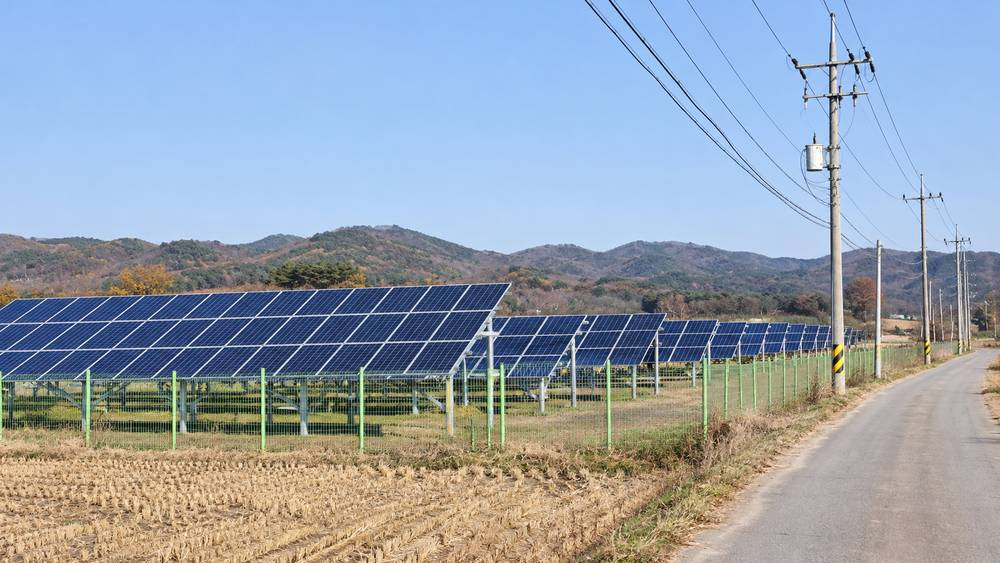
RPS 의무공급량 확정, 1월보다 15만MWh 줄어
기후에너지환경부가 11월 24일 29개 공급의무자 몫을 6,917만4,827MWh, 9,407만7,763REC로 확정했다. 한국남부발전 감소 폭이 가장 컸다.

제주 재생에너지 100%, 2035년까지 5.5GW 늘린다
기후에너지환경부와 제주도가 11월 26일 이행안을 냈다. 도민 이익공유는 검토 단계이고, 12월부터 낮 전력가격이 0원 이하인 시간 요금을 50% 깎아 준다.

한국발전공사법안 발의, 본사 보령·자본금 32조 원
장동혁 의원 등 11명이 11월 24일 냈다. 발전공기업 5곳을 해산해 합치고 정부가 51% 이상 출자하며, 일부 사업은 협동조합에도 맡길 수 있다.

하남 동서울변환소 협의서, 감일 주민투표로 결정
기후에너지환경부와 한전, 주민대표가 11월 25일 합의했다. 19개 단지 세대주가 서명 여부를 투표로 정하고, 전자파·소음 자료는 제3 기관이 검증한다.

공장 지붕 재생에너지 의무화, 이행강제금 3,000만 원
박지혜 의원 등 11명이 11월 19일 냈다. 일정 규모 이상 공장·지식산업센터를 새로 짓거나 늘릴 때 설비를 달게 하고, 시행은 공포 1년 뒤다.

영농형 태양광 농업인 200㎾ 상한, 작물은 20종만
농림축산식품부가 사업 규모·재배작물 고시안을 11월 25일 행정예고했다. 벼·콩·사과 등 20종만 기를 수 있고 의견은 12월 7일까지 받는다.
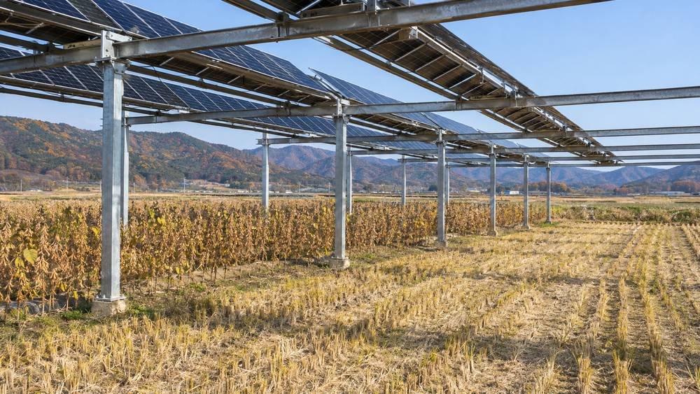
전기택시 전환 협약, 2035년까지 새 택시 전기차로
전국 택시 22만9,000대 가운데 전기택시는 17%다. 기후부·국토부와 두 택시 연합회가 5년 협약으로 충전시설·융자·전환지원금을 맞춘다.

폭염 사망 한 해 207명, 공식 통계의 3.3배
질병관리청이 11월 23일 공청회 자료집에 실은 기후보건영향평가 결과(안)다. 고령화를 반영하면 2040년대 더위 사망이 한 해 3,229~4,893명 늘어난다.

재생에너지 계약시장 고시안, 11월 27일 설명회서 공개
2027년 1월 RPS를 경쟁입찰 계약시장으로 바꾸기에 앞서 기후에너지환경부가 고시 초안을 내놓는다. 현장 300석은 11월 24일부터 신청받는다.

COP31 대표결정문 불발, 17년 만에 합의 실패
튀르키예 안탈리아 총회가 예정보다 이틀 늦은 23일 새벽 끝났다. 화석연료 전환 문구에서 갈렸고, 정의로운 전환 작업프로그램은 연장됐다.

IEA 에너지전망, 한국 풍력 2040년 130TWh 이상
국제에너지기구는 한국 에너지 수입의존도를 약 80%로 일본과 함께 세계 최고로 봤다. 해상풍력·송전망·ESS를 재생에너지 100GW 이행 과제로 꼽았다.
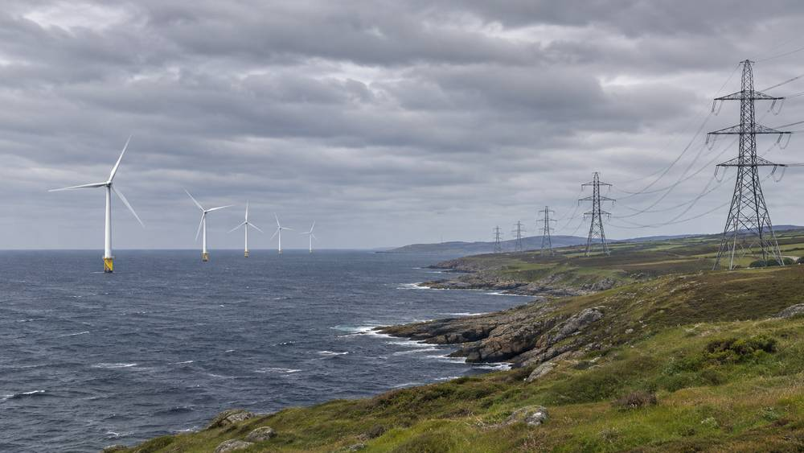
보통교부세 개편, 예산 못 쓴 지방정부 불이익 20% 높여
행정안전부가 11월 20일 2027년도 개선 방안을 확정했다. 체납관리단 조사원 인건비 수요를 새로 넣고, 시행규칙 개정안은 12월 중순 무렵까지 입법예고한다.
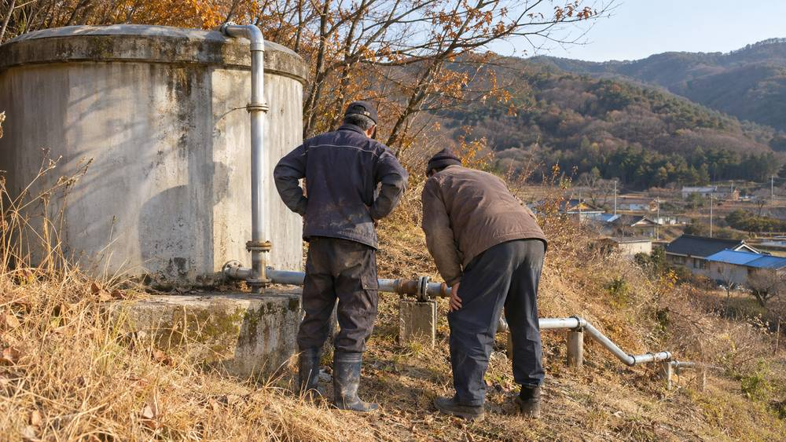
AI 데이터센터 계통평가 면제안, 비수도권 50MW 이하
특구 안 시설은 비기술적 평가를 빼고 기술적 평가만 받게 할 계획이다. 시행령 제정안 의견은 12월 30일까지 내고, 공청회는 12월 9일 열린다.

기계설비 성능점검 개선명령, 60일 안에 계획 내야
국토교통부 11월 19일 입법예고안에 어린이집·노인복지시설 설비 지원 절차도 담겼다. 의견은 시행령 11월 30일, 시행규칙 12월 10일까지 받는다.
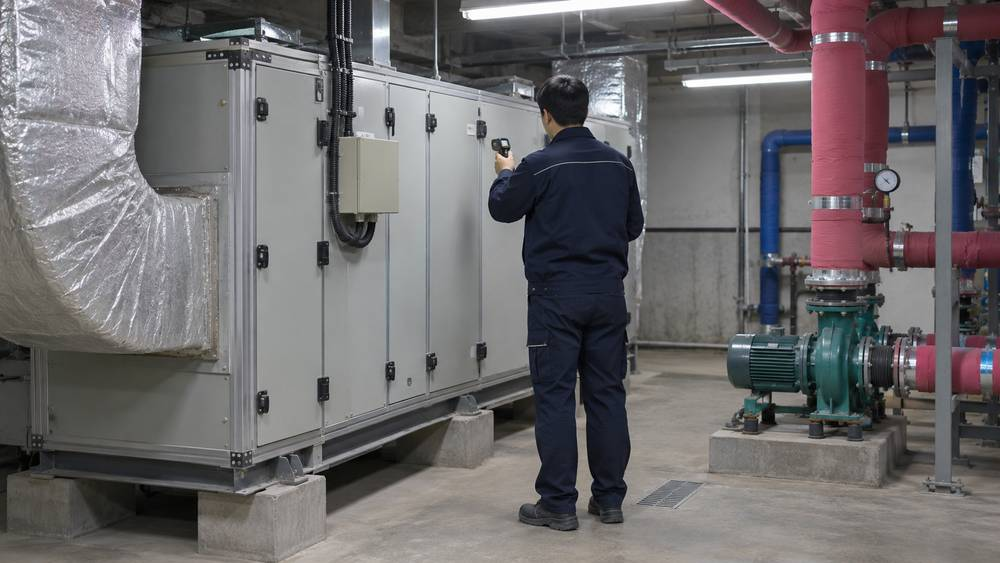
최저주거기준 15년 만에 개정 추진…기후재난 기준 논의
국토교통부가 20일 오후 서울 토론회에서 1인 가구 14㎡ 등 2011년 면적·설비 기준을 다시 보고, 보편형 공공임대 입주 기준도 듣는다.

국공유지 태양광 임대 20년으로, 재생에너지법 개정안
박지혜 의원 등 12명이 11월 18일 냈다. 발전설비 설치기간을 따로 두고 한 차례 10년 연장을 허용하는 안으로, 현행법은 10년씩 두 차례 갱신을 둔다.
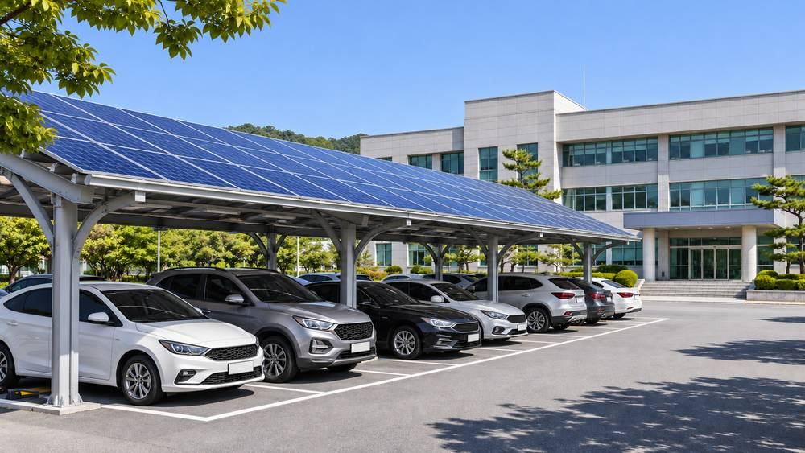
ESS 구축지원 2차 공모, 접속대기 배전선로 34곳 대상
기후에너지환경부가 통합발전소 사업자를 찾는다. 태양광 1,663곳이 접속을 기다리는 선로들로, 신청은 11월 27일 오후 4시까지 전자우편으로 받는다.
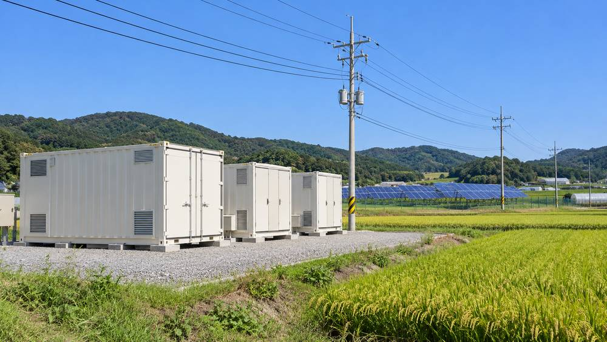
기후부·국제에너지기구, 기후총회서 아시아 에너지안보 구상 첫 소개…동남아 전력화율 25%에서 37%로 높일 여지
한국은 11월 11일 2035년 전기 비중 35% 서약에 동참 / 위기 대응·청정 전기화·정책대화 3개 분야, 이행계획 시기는 미정

해상풍력 설치선 취득세 85% 감면 법안 발의
채현일 의원 등 10명이 낸 지방세특례제한법 개정안으로, 재산세도 5년간 50% 줄인다. 시행은 2027년 1월, 입법예고는 11월 22일까지다.

국가하천 86곳 자연공존지역 등록, 11월 27일까지 의견
기후에너지환경부가 한강·낙동강 등 5개 권역 하천구역 등록 의견을 받는다. 산림청은 19일 생명의숲과 숲 후보지를 함께 찾는 협약을 맺었다.

산불 국제공조 행동계획 출범, 24개국 지지
산림청이 기후총회에서 튀르키예·브라질과 '안탈리아 통합산불관리 행동계획'을 함께 띄웠다. 캐나다·영국·일본 등이 지지했고 FAO와의 공동사업 2차기도 소개했다.

원전 발전량, RPS 의무공급량 계산서 빼자는 법안
김위상 의원 등 12명이 낸 재생에너지법 개정안으로, 공포 6개월 뒤 시행된다. 의견은 11월 22일까지 국회입법예고 누리집에서 낸다.
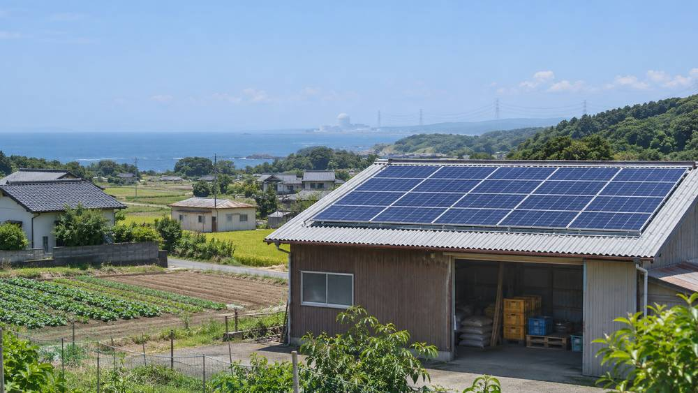
재생에너지 기자재 관세 경감, 2029년까지 연장 법안
배준영 의원 등 13명이 낸 조세특례제한법 개정안으로, 전기·수소 시내버스 부가세 면제도 2030년까지 늘린다. 입법예고는 11월 19일까지다.
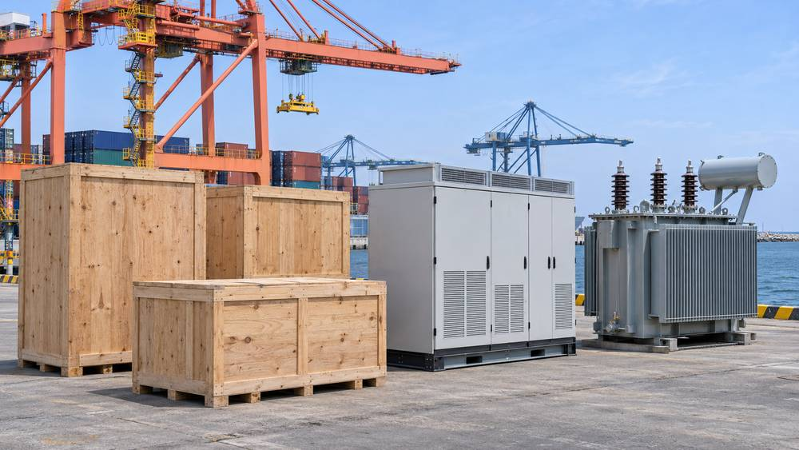
노후 발전설비 안전성평가 법안, 위험등급이면 철거
김태선 의원 등 11명이 낸 전기안전관리법·전기사업법 개정안 2건으로, 평가를 안 받으면 300만 원 이하 벌금이다. 입법예고는 11월 22일까지다.

공공기관 냉방 실내온도 기준 26℃ 이상, 난방 20℃ 이하로…기후부 고시 개정안 23일까지 의견 받는다
비전기식 냉난방설비에 주던 2℃ 완화 특례는 삭제 / 국토부도 냉방설비 설치·설계기준 폐지에 맞춰 건축물 설비 규칙 손질

지방정부에 조례 본보기 10개…폐교 대부료 낮춘 제주, 활용률 71.4%로 올라
법제처, 노인 방문판매 피해·저장강박·식품사막화·주차공유 등 조문까지 제공 / 지방의원·법제 담당자 교육으로 반영 지원

사용후핵연료 30년 관리계획 초안, 11월 23일까지 국민 의견 받는다…원전 안 저장시설 2030년 한빛부터 포화 전망
제3차 고준위 방사성폐기물 관리 기본계획(2027~2056) 공람, 누적 55만2,478다발 / 지역 설명회는 대구·부산·광주 원전 권역에서만, 검토 결과는 12월 23일까지 통보

가평·신안·대전 중구, 생활인구 읍면동·시간대별로 쪼개 본다…행안부·국가데이터처 첫 심층분석
신안 방문객 83.3%는 다리로 이어진 섬에, 머무는 시간은 도서지역이 1.8배 / 분석 결과는 관광거점·여객선 운항·원도심 상권 사업에 쓰기로

핵심광물 38종에서 51종으로…산업부, 희토류 10종·형석·인·게르마늄 넣는 고시 개정안 12월 7일까지 의견 받는다
9월 자원안보 협의회 지정계획을 고시에 반영, 인·형석은 배터리 양극재·전해액 원료로 꼽혀 / 비축 품목은 24종에서 29종으로, 취약 광종 비축 목표는 최대 365일

한·호주 탈탄소화 양해각서, 6개 협력 분야에 시민사회·청년 참여
전기화·전력망부터 기후적응까지 협력 / 유엔기후변화협약 사무국에 공동제안서…한국 53~61%·호주 62~70% 감축 목표 함께 실어
농공단지·캠퍼스에 AI 마이크로그리드, 정부 지원 104억7,000만 원 2차 공모…12월 7~14일 접수
농공단지는 같은 배전선로·변전소 입주기업 5곳 이상 묶어야 / 출력제어 대상 지역 가점 최대 4점, 봄·가을 정해진 시간 저장장치 충전 의무
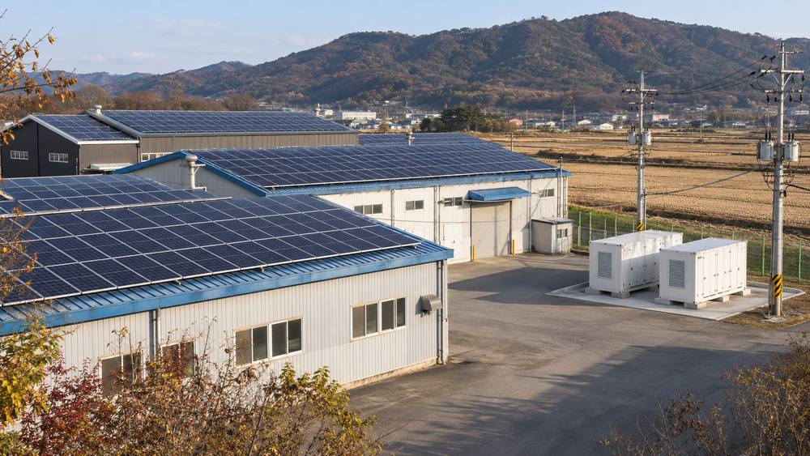
원전 공론화위원회 11월 25일 공개토론회, 현장 참석 신청은 23일까지
'원전공론화.kr' 누리집에 국민 의견 게시판 / 현장 청중 100여 명 추첨, 12월 11~13일 숙의토론회 뒤 12월 중 정부에 권고안

한국 탄소시장연합 가입, 회원국 13개국으로…상쇄배출권 공통 원칙 논의에 참여
11월 16일 COP31 계기 고위급 회의서 가입 발표 / 연합 업무계획은 산정·보고·검증, 탄소회계, 파리협정 제6조 연계 등 5대 영역


국방부, 정전에도 전력 잇는 군 에너지 전환 계획 처음 세웠다
4개 분야 12개 세부 추진과제 도출…장성 상무대 마이크로그리드는 태양광 3,015 kW·ESS 9.76 MWh 규모

기후에너지환경부, 수도권 데이터센터 전력계통영향평가 통과 점수 75점으로 올려 16일 시행
새 '전력이용밀도' 항목은 5점 감점, 시범운영 신청은 수도권 28건 1.9GW·비수도권 64건 7GW

경기도 공공부문 재생에너지 101%는 설비 기준, 실제 발전량은 사용량의 14%
28.5MW 설비 구축으로 목표 달성…2025년 발전량 8,543MWh, 전력사용량 60,823MWh
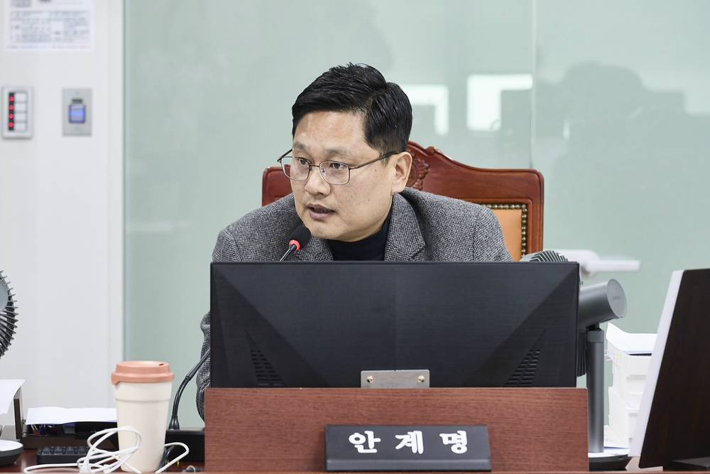


햇빛소득마을 523곳 중 착수 가능 36곳…사업화 지원 우선 권고
1차 87곳 가운데 13곳만 즉시 추진, 59곳은 전력망 미비로 조건부 선정 / 2027년 예산안에 추진단 운영비 4억 6,100만 원 신규 편성


영농형 태양광법 12월 17일 시행인데…영양변전소 전기 공급 2년 6개월 늦춰져
154kV 영양변전소 2027년 6월에서 2029년 12월 말로 연기, 약 29㎞ 송전선로와 송전탑 약 76기 아직 착공 못 해